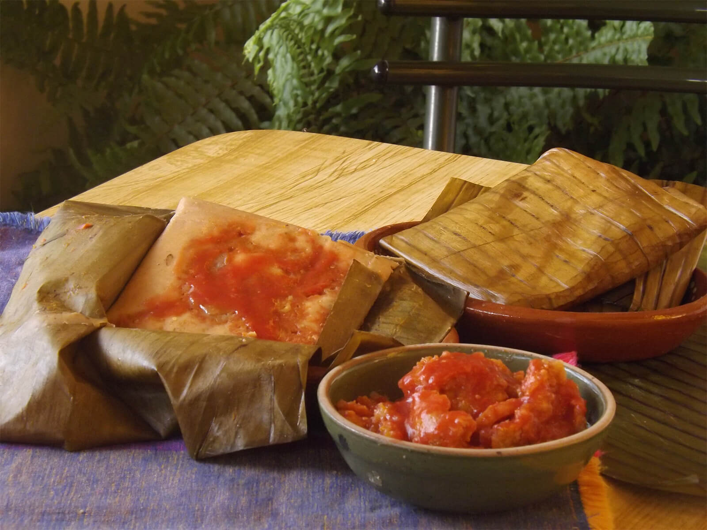

Tamales

This homemade tamales recipes comes from Oaxaca, Mexico
region.The tamales are stuffed with a masa made from
scratch and a chicken filling made with tomatillos, herbs, and 2 different types of chile
peppers.
Time
Cook: 1 hr 45 mins
Prep: 45 mins
Additional: 15 mins
Yield: 36 tamales
Total: 2 hr 30 mins
Ingredients
- 11 ounces of lard, dived
- salt to taste
- 9 cups of masa harina
- 1 cup warm chicken broth
- 3 tomatillos, husk removed
- 1 ancho chile (remove seeds and stems)
- 1 mulato chile (remove seeds and stems)
- 1 clove of garlic, minced
- ground pepper to taste
- dried oregano to taste
- 1 pound of shredded chicken
- 36 banana leaves, soak in warm water to soften
Directions
- Beat 9 ounces lard in a large bowl with an electric
mixer until creamy. Add salt and continue beating
for a few minutes. Add masa harina and beat well
until combined. Add chicken broth, 1/4 cup at a time,
beating until masa has a smooth and workable consistency
similar to cookie dough, about 3/4 cup total. Test if the
masa is ready by dropping a small ball of masa into a
glass of cold water; if it floats, it's ready, if not,
beat the dough a little longer.
- Combine tomatillos, ancho chile pepper, mulato chile pepper,
garlic, salt, pepper, and oregano in a blender; blend
until smooth.
- Heat remaining 2 ounces lard in a skillet and cook tomatillo sauce until lightly thickened, 3 to 5 minutes. Add shredded chicken and a little of the remaining chicken broth. Cook over low heat until chicken filling has thickened, about 10 minutes.
- Spread 2 to 3 tablespoons masa mixture onto 1 banana leaf, filling it up to 2 inches from the bottom and 1/4 inch from the top. Add 1 tablespoon of the chicken filling in the center of the masa mixture. Fold sides of banana leaf together, one over the other. Fold the bottom of the banana leaf over the seam of the 2 folded sides and tie together with kitchen string. Repeat with remaining banana leaves.
- Place a steamer insert into a saucepan and fill with water to just below the bottom of the steamer. Bring water to a boil. Add tamales with the open side up and cook until filling is heated through and separates from the leaf, 1 hour 30 minutes to 2 hours. Let tamales rest for 15 minutes before serving.